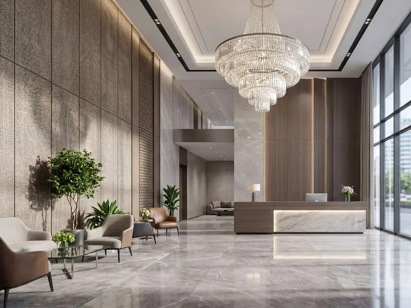
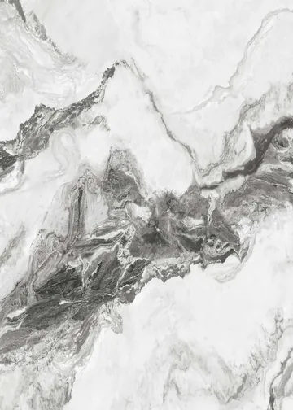
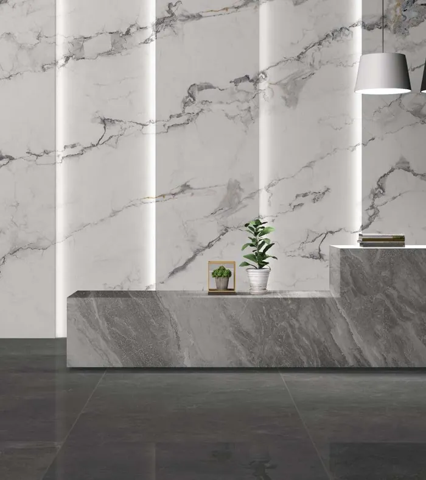

Texturr · UI system v1
One typeface. White space, a dark anchor.
Colour: White and #111827
White · primary
#FFFFFFCanvas, header, cards, light buttons.#111827 on it 17.7:1#111827 · secondary
#111827Text, buttons, icons, dark bands, footer.White on it 17.7:1Logo red
#EC2227The logo stripes only. Never used in the UI.Logo artwork onlyInk 72%
rgba(17,24,39,.72)Secondary text on white.≈7:1 on whiteInk 60%
rgba(17,24,39,.6)Heading emphasis, placeholders.≈4.7:1 on whiteInk 48% / 14%
rgba(17,24,39,.48)Input borders (48%) and dividers (14%).Borders ≈3:1Ink 5%
rgba(17,24,39,.05)Quiet panels, hover fill.DecorativeWhite 72%
rgba(255,255,255,.72)Secondary text on #111827.≈9.9:1 on #111827Logo
Logo colour
- The artwork is used exactly as supplied: letters in #111827 or White, and stripes in the original red
#EC2227. - Red belongs to the logo only. Buttons, links, focus rings and errors use #111827.
- Never recolour the stripes, and never set the logo on a photograph.
Space and size
- Keep clear space equal to the height of the T’s crossbar on every side.
- The tagline lockup is for the footer and print only. The header uses the wordmark alone.
- Never stretch, outline or add effects. The stripes are part of the mark, not decoration to animate.
Type
Architectural wall panels
Five series. Hundreds of decors.
Live with them
ImpactShield and Fluted wall panels in five series.
Our team will recommend the right panel and decor for your project.
The collection
Components
Enter an email address, like name@studio.com
Photography
All imagery comes from the Texturr catalogues: installed rooms, decor swatches labelled with their codes, and panel build-ups. Swatches are never cropped to a different decor area or recoloured.




Rules
Colour and type
- Two colours: White leads, #111827 carries all text and actions. Greys are tints of #111827, so no third hue appears.
- One typeface, Inter. Headings use weight 500 with tight tracking. No italics, no serif.
- Emphasis is a second tone (#111827 at 60%), never italic.
- Only one #111827 band per screen, plus the footer.
- Errors use weight, an icon and clear copy rather than a new colour.
Motion and interaction
- One entrance per page: text rises 14px over 700ms and the hero photo unveils over 1.1s. Nothing loops.
- Card photos scale 3% on hover over 800ms. No parallax.
- Hover changes are 200–350ms colour or underline only.
- Every animation is removed under prefers-reduced-motion.
- Tap targets ≥ 44px. Focus ring: 2px #111827, 3px offset (White on dark).